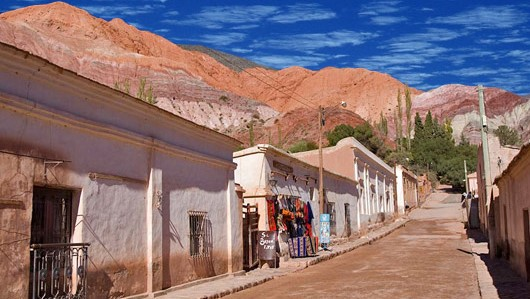

Quebrada de Humahuaca
Un deslumbrante cañón de colores cambiantes y pueblos históricos, Patrimonio de la Humanidad por la UNESCO.

Salinas Grandes
Un vasto desierto de sal que brilla bajo el sol, creando un paisaje surrealista y único.

Tilcara
Pueblo pintoresco con arquitectura de adobe, el Pucará de Tilcara y una vibrante escena cultural.
Termas de Reyes
Complejo termal cerca de San Salvador de Jujuy, con aguas terapéuticas y vistas a las montañas.